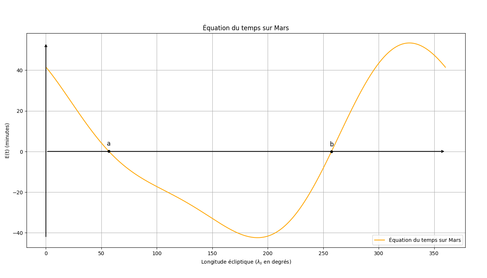
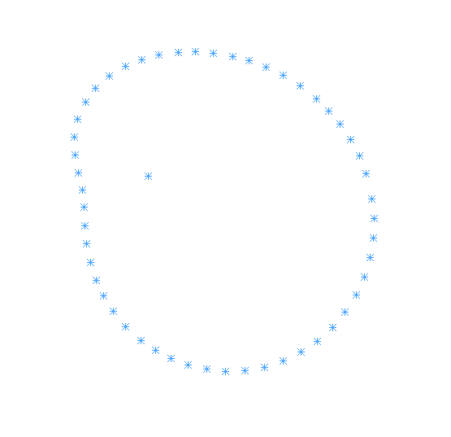
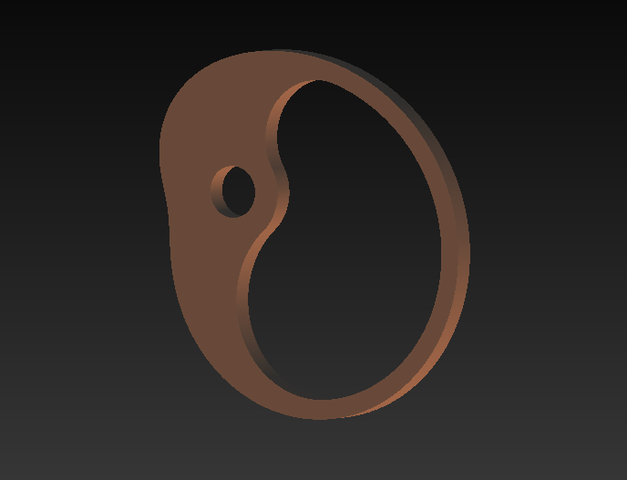

La came d'équation du temps sur Mars
Contexte
Projet extra-scolaire visant à concevoir une came d’équation capable de simuler les variations entre le temps solaire vrai et le temps solaire moyen sur Mars.
Processus
Le projet a suivi une méthodologie rigoureuse comprenant :
- Recherche théorique sur l'équation du temps sur Terre
- Étude sur la mécanique céleste
Télécharger un extrait de l'étude (PDF) - Adaptation des paramètres de la fonction e(t) pour Mars
- Analyse de l'article de Thierry Alhalel
Voir l'article de Thierry Alhalel - Création des codes Python pour la transition mécanique du graphe polaire



- Modélisation 3D de la came sur SolidWorks


Competences developpees
- Astronomie
- Mécanique céleste
- Calculs numériques
- Codage Python
- Prototypage mécanique
- Conception horlogère
- Solidworks
Resultats
La came a été conceptualisée avec des repères marquant les valeurs où (E(t)=0). Un contrepoids en tungstène sera ajouté pour équilibrer la masse.
Defis rencontres
- Compréhension de la mécanique céleste
- Codage des graphes de (E(t))
- Conception et équilibrage sur SolidWorks
Statut
Projet en cours d'amélioration, avec pour objectif d'intégrer la came dans un mécanisme imprimé en 3D.